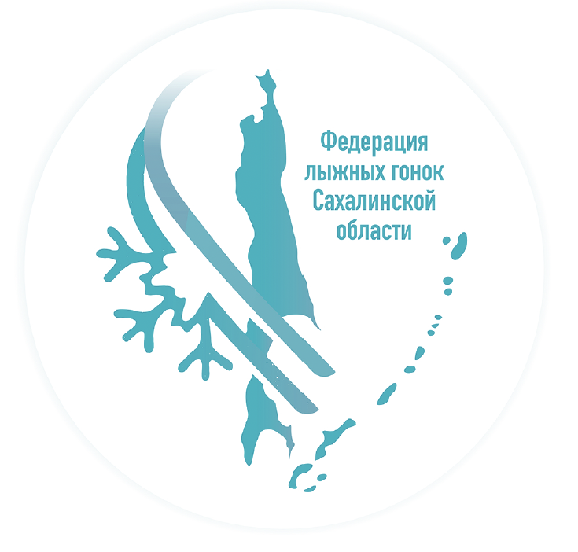
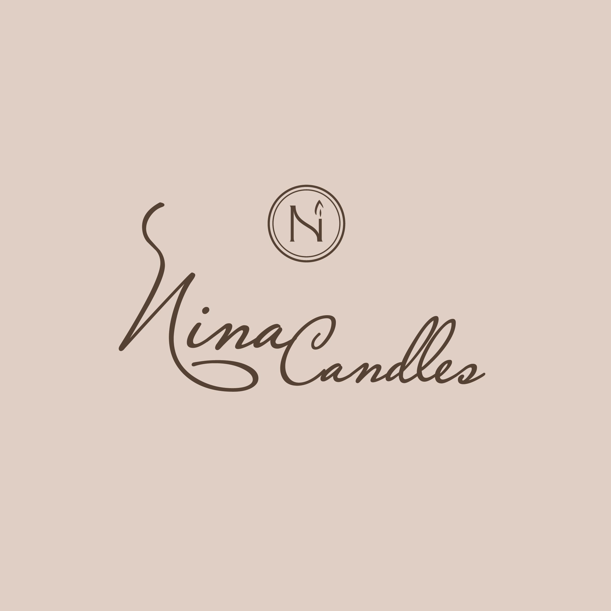

| Project | Description |
|---|---|
|  |
This logo was designed for the Sakhalin Ski Federation with the goal of capturing both the regional identity and the essence of winter sports. The design incorporates the distinctive shapes of Sakhalin Island and the Kuril Islands to ground the logo in its geographic context. A monochromatic color palette, inspired by the flag of the region, was used to maintain a clean, cohesive aesthetic. I integrated ski trail marks into the design, along with a snowflake to evoke a sense of winter and movement. |
|
|
This logo was developed as part of an identity design assignment, with the objective of creating a minimalistic mark that reflects my personality and approach as a designer. I chose to represent myself through a simplified outline of my head, incorporating key features such as a friendly, inviting smile and the distinctive shape of my curly hair to convey approachability and individuality. The brand name “VICKIN” is included as the central typographic element, representing the personal brand I’m building within the field of graphic design. The choice of pink as the primary color reflects my personal aesthetic and adds a vibrant, playful tone that aligns with my creative identity. |
|  |
This logo was created for my aunts candle shop, with the objective of conveying a sense of warmth, sensuality, and calm—qualities closely associated with the experience of candlelight. The design utilizes a soothing, warm color palette to evoke feelings of comfort and relaxation, while also reflecting the physical warmth of a lit candle. The branding solution consists of two complementary logo variations: a primary logo featuring the full brand name in an elegant cursive typeface to convey softness and sophistication, and a secondary logo built around a stylized, capitalized letter “N” integrated with candle motifs. This dual approach allows for flexible application across various brand touchpoints, from packaging to social media. |